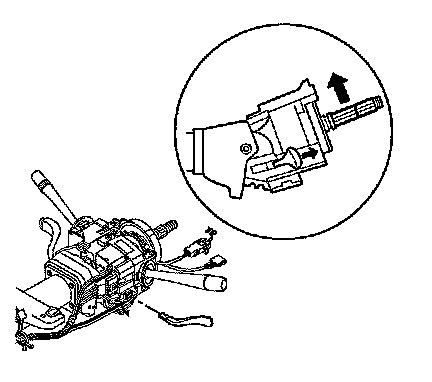
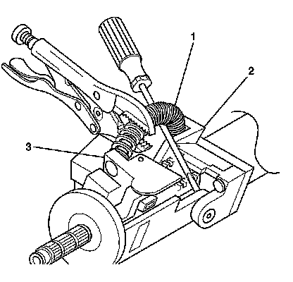
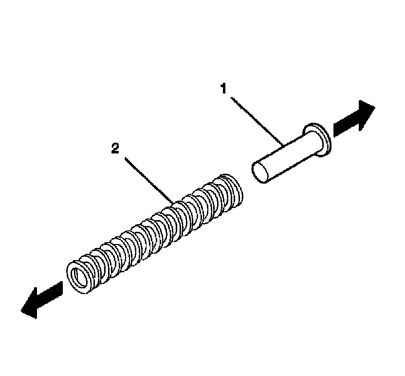
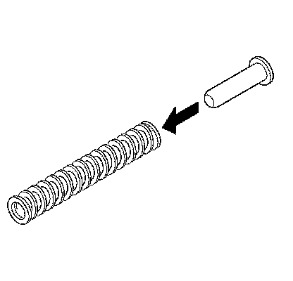
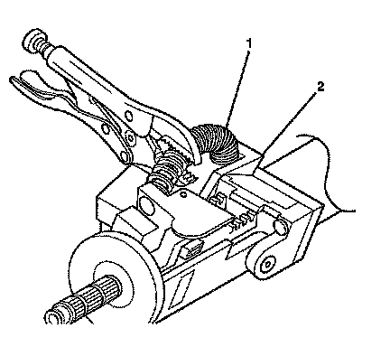

Tilt Spring Replacement
Tilt Spring Replacement
Removal Procedure

1. Remove the knee bolster.
2. Remove the upper and lower trim covers.
3. Install the tilt lever onto the steering column tilt head assembly.
4. Use the tilt lever to tilt the column to the UP position.

Caution: The tilt spring and the spring guide are under pressure. The tilt spring and the spring guide may become a projectile. Secure the spring with locking pliers during removal. Secure the spring with locking pliers during installation. Bodily injury may result during removal and installation of the tilt spring and the spring guide. Always use caution during removal and installation of the tilt spring and the spring guide.
5. Remove the tilt spring (1) from the steering column support assembly (2) and from the steering column tilt head assembly (3) by using the following procedure:
1. Pry up the tilt spring (1) until a bulge occurs and most of the tilt spring tension is removed.
2. Secure the tilt spring (1) with locking pliers.
3. Continue prying up the tilt spring (1) until the tilt spring disengages from the post on the steering column support assembly (2) and from the steering column tilt head assembly (3).

6. Remove the spring guide (1) from the tilt spring (2).
Installation Procedure
1. Use the tilt lever to tilt the column to the UP position.

2. Install the spring guide into the tilt spring.

Caution: The tilt spring and the spring guide are under pressure. The tilt spring and the spring guide may become a projectile. Secure the spring with locking pliers during removal. Secure the spring with locking pliers during installation. Bodily injury may result during removal and installation of the tilt spring and the spring guide. Always use caution during removal and installation of the tilt spring and the spring guide.
3. Install the tilt spring (1) onto the steering column support assembly (2) and onto the steering column tilt head assembly by using the following procedure:
1. Install the tilt spring (1) onto the steering column tilt head assembly.
2. Install the tilt spring (1) onto the post on the steering column support assembly (2).
4. Install the upper and lower trim covers.
5. Install the knee bolster.